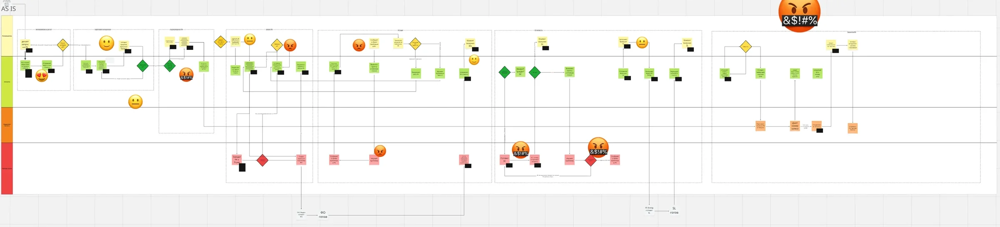
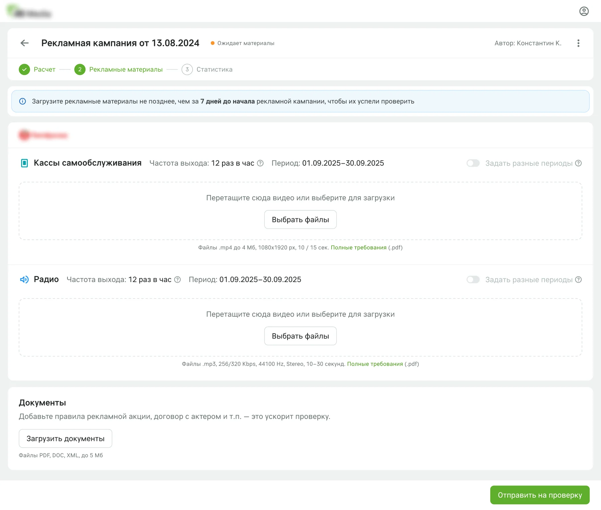
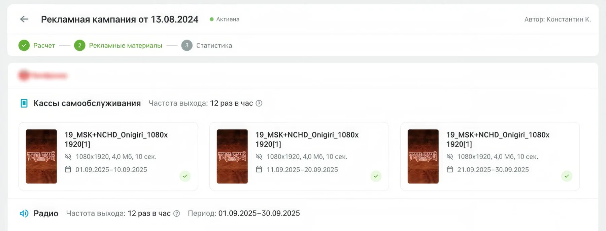
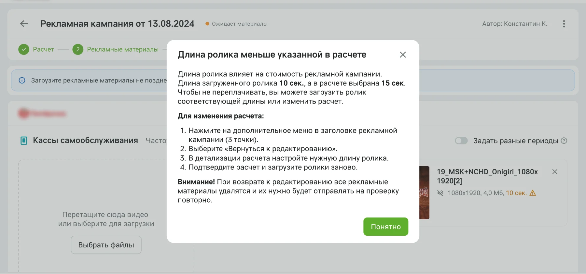
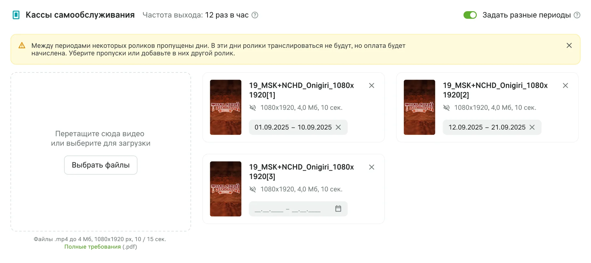
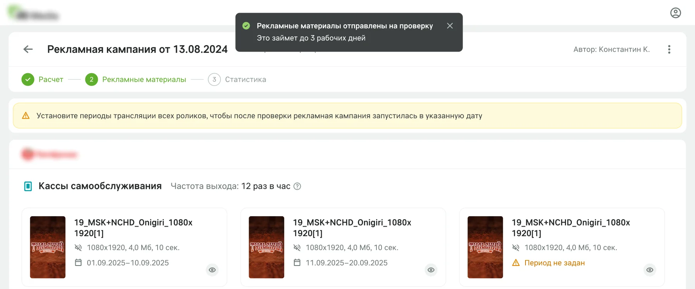
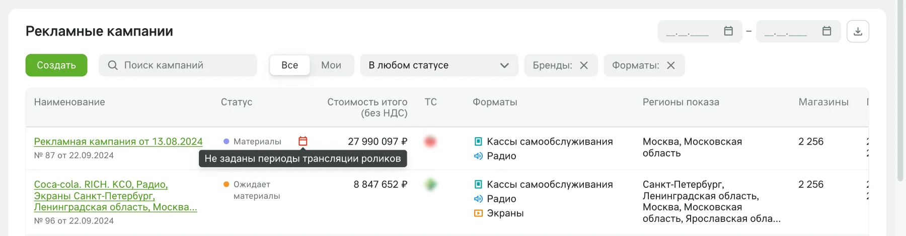
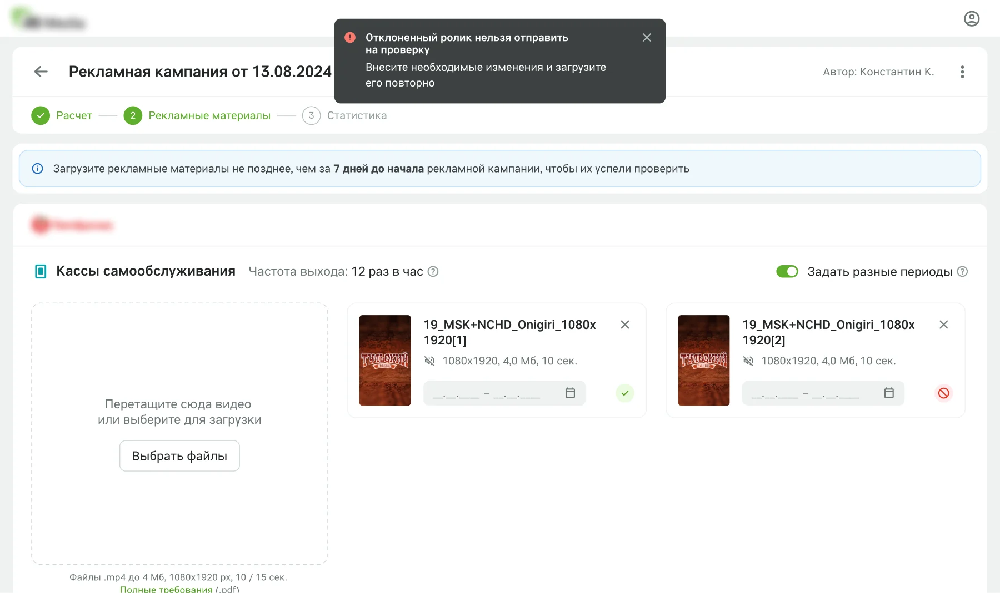

Последний шаг запуска оставался на почте
Почти весь запуск кампании уже был в кабинете, кроме загрузки рекламных материалов. Менеджеры агентств отправляли файлы аккаунт-менеджерам, а те передавали их дальше менеджерам по размещению и юристам. Цель: сделать запуск кампании полностью цифровым и убрать лишние звенья.

Что выяснили
Я поговорил с аккаунт-менеджерами, менеджерами по размещению и менеджерами агентств и собрал их потребности в job stories. Главные из них:
Ограничения, которые задали рамки решения: у разных форматов и сетей разные требования к файлам (хронометраж, ориентация, разрешение), на один формат может быть до 6 файлов, длина ролика должна совпадать с выбранной при расчёте, а правила акции и договор загружаются в том же процессе.
Все материалы кампании на одном экране
- Переход к загрузке сразу после расчёта: когда расчёт подтверждён, кабинет автоматически открывает следующий шаг, загрузку рекламных материалов. Сверху напоминание о сроке: материалы нужны не позднее чем за 7 дней до старта.
- Отдельный блок на каждый формат с требованиями к файлам и загрузкой перетаскиванием: требования видны до загрузки, а не после отказа на модерации.
- Общий период показа в заголовке блока и переключатель «Задать разные периоды» для тех, кому нужно показывать ролики по очереди.
- Документы в том же интерфейсе, без отдельного письма юристу.
- Статусы на каждом шаге: отправлено на проверку, согласовано, ждёт старта, кампания запущена.

Тест прототипа поменял формулировки и блоки
Я проверил интерактивный прототип с пятью участниками на пяти гипотезах. Вот что подтвердилось и что мы поменяли:
Больше всего вопросов было к режиму показа. Один участник сразу понял, что такое «Ротация», а «Очередь» понял только после того, как переключился на неё и заданные периоды сбросились. Поэтому вместо выбора режима появился переключатель «Задать разные периоды».
«Зачем нужна очередь, если можно в ротации просто задать период?»
Материалы проходят путь внутри кабинета
Кабинет ведёт кампанию от загрузки до старта: показывает, какие ролики загружены и какие уже согласованы, и сам запускает кампанию в запланированную дату.



Кабинет ловит ошибки, которые стоят денег и сроков
Всего в этой задаче я проработал больше 15 сценариев, включая пустые состояния и ошибки. Вот четыре из них, где ошибка клиента стоила бы денег или сдвинула старт кампании.
1. Длина ролика не совпадает с расчётом
Стоимость кампании зависит от длины ролика, выбранной в расчёте. Если загруженный ролик длиннее, отправить его нельзя: нужно заменить ролик или изменить расчёт. Если короче, кабинет объясняет, что длина влияет на стоимость, и предлагает не переплачивать: загрузить ролик нужной длины или изменить расчёт. В окне есть шаги, как вернуться к расчёту, и предупреждение, что загруженные материалы при этом удалятся.

2. Период с пропусками
Если между периодами роликов остались свободные дни, кабинет предупреждает: в эти дни ролики не покажут, но оплата будет начислена. Пропуск можно убрать или поставить в него другой ролик.

3. Отправка без периодов
Материалы можно отправить на проверку, даже если периоды показа ещё не решены. Ролик без периода помечается предупреждением, а в списке кампаний у такой кампании появляется красный значок календаря. Перед стартом пустой период уже ошибка: в статусе «Ожидает старта» периоды должны быть заданы у всех роликов.


4. Правки после отправки на проверку
Материалы можно менять до старта кампании. Отклонённый ролик нельзя отправить повторно, только заменить. Проверенные ролики сохраняют статус, новые получают метку «На проверке». Пока клиент редактирует, трафик-менеджер видит уведомление, и согласовать ролики в это время нельзя. После старта кампании редактировать материалы в первой версии нельзя.

Вместе с расчётом кабинет закрыл весь путь до запуска. Расчёт кампании, загрузка материалов и согласование теперь в одном месте, и менеджеры агентств запускают кампании без посредников.